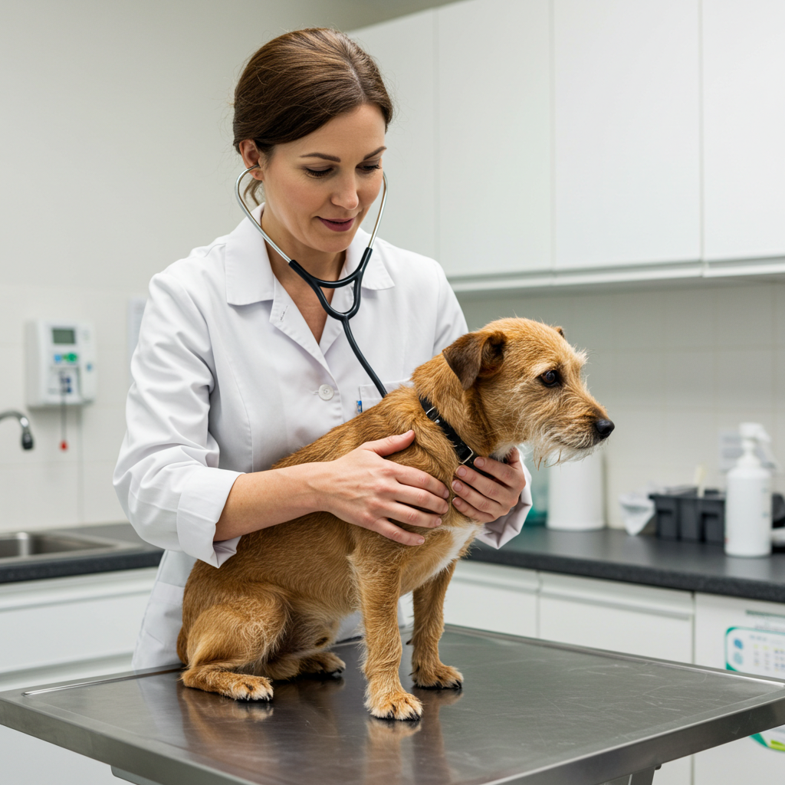
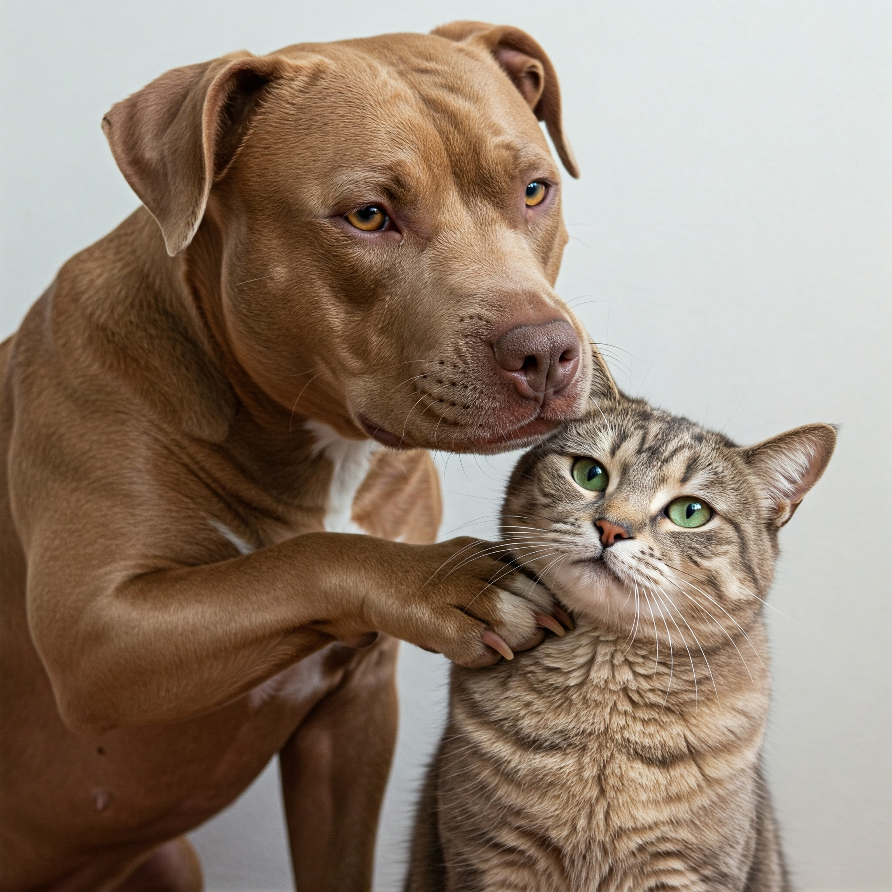

Serviços veterinários e de bem-estar ao seu alcance.

Banho e Tosa
Serviços de embelezamento para um pet limpo e feliz.
Saiba mais
Vacinas
Proteção completa com nosso calendário de vacinação.
Saiba mais

Consultas
Agende consultas especializadas para a saúde do seu pet.
Saiba mais

Veterinários Próximos
Cuidado Veterinário de Qualidade, pertinho de Você
Saiba mais
Histórico de Agendamentos
Acompanhe todos os serviços agendados para o seu pet.
Saiba mais

Guia de Cuidados Essenciais
Um guia prático com tudo o que você precisa saber para garantir o bem-estar do seu pet.
Saiba mais